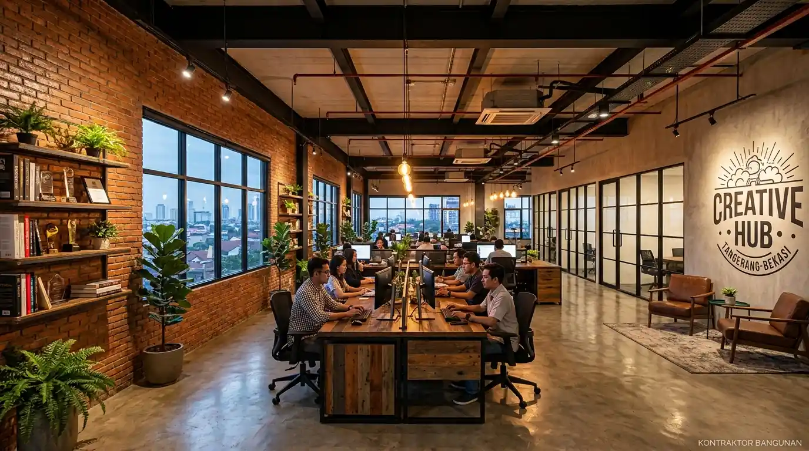

1. Berapa Estimasi Harga Jasa Interior Kantor Tangerang & Bekasi?
Estimasi harga jasa redesain interior kantor di Tangerang dan Bekasi berada pada kisaran Rp1.800.000 hingga Rp3.800.000 per m² tergantung lingkup pekerjaan dan mutu finishing material.
Biaya renovasi interior kantor ditentukan oleh beberapa variabel utama: kondisi awal eksisting ruangan (apakah berupa bare shell atau renovasi ruang aktif), modifikasi instalasi Mechanical, Electrical, & Plumbing (MEP), pemasangan plafon akustik, serta pembuatan custom furniture seperti meja resepsionis, backdrop logo berlampu LED, dan workstation kubikel.
Berdasarkan data Himpunan Desainer Interior Indonesia (HDII) Regional Jabodetabek (2025/2026), penataan interior kantor yang terencana secara profesional terbukti menaikkan retensi karyawan hingga 31% dan menciptakan impresi profesional yang kuat di hadapan calon klien korporat.
- Pertahankan Titik Distribusi MEP Utama: Meminimalkan pemindahan jalur pipa utama AC sentral dan panel MCB listrik dapat menghemat biaya pembongkaran hingga 15%.
- Gunakan Sistem Modul Knock-Down: Meja workstation modular mudah dibongkar-pasang dan dipindahkan jika sewaktu-waktu kantor Anda berpindah lokasi sewa.
- Optimalkan Pencahayaan LED 4000K: Lampu warna natural white (4000 Kelvin) memberikan kecerahan optimal untuk membaca dokumen tanpa membuat mata cepat lelah.
2. Apa Keunggulan Pemasangan Sekat Ruangan Kantor Modern?
Pemasangan sekat ruangan kantor modern meningkatkan privasi akustik saat diskusi rahasia, membagi zona kerja secara fungsional, dan memberikan estetika elegan pada bangunan.
Bagi perusahaan di kawasan industri Bekasi dan sentra bisnis Tangerang, membagi ruang operasional yang luas menjadi ruang rapat kedap suara, ruang direksi, dan area rekreasi (breakout room) membutuhkan sistem partisi yang tepat. Pilihan sekat yang populer meliputi:
- Sekat Kaca Tempered Frameless 10/12 mm: Memberikan kesan lapang, modern, dan memaksimalkan penetrasi cahaya alami ke seluruh ruangan.
- Partisi Gypsum Akustik Double Board + Rockwool: Sangat efektif meredam transmisi suara antar ruang meeting dengan koefisien Sound Transmission Class (STC) tinggi.
- Partisi Geser Lipat (Movable Wall): Memberikan fleksibilitas menggabungkan dua ruang rapat kecil menjadi aula serbaguna dalam hitungan menit.

Pemasangan partisi kaca berpadu sekat panel akustik menghadirkan privasi maksimal untuk ruang pertemuan dewan direksi dan presentasi bisnis.
3. Tabel Komparasi: Paket Renovasi Interior Parsial vs Fit-Out Full Turnkey
Tabel perbandingan di bawah ini membantu manajemen pengadaan menentukan skema renovasi yang paling tepat berdasarkan alokasi anggaran dan batas waktu proyek.
| Komponen Pengerjaan | Renovasi Parsial / Makeover Standar | Fit-Out Full Turnkey (Kontraktor Bangunan) |
|---|---|---|
| Estimasi Biaya / m² | Rp1.500.000 – Rp2.200.000 / m² | Rp2.500.000 – Rp3.800.000 / m² |
| Lingkup Desain & 3D | Sketsa layout 2D dasar | Render 3D photorealistic, DED & gambar kerja MEP |
| Pekerjaan Partisi & Akustik | Partisi single gypsum tanpa peredam | Kaca tempered + Double gypsum Rockwool STC 48 dB |
| Custom Furniture & Flooring | Pengecatan ulang & furnitur lepas | Custom HPL workstation, karpet tile, vinyl heavy duty |
| Jaminan Waktu & Izin BM | Dikelola mandiri oleh klien | Pengurusan izin fit-out BM & garansi retensi tertulis |
4. Bagaimana Tahapan Pengerjaan Redesain Ruang Kantor Bebas Gangguan Operasional?
Tahapan pengerjaan redesain kantor yang terstruktur meliputi survei ruang fisik, perancangan layout 3D, fabrikasi workshop off-site, dan instalasi on-site secara cepat.
Untuk meminimalkan debu dan suara bising di lokasi kantor Anda, kami menerapkan metode fabrikasi perabot (furniture cabinetry) di workshop terpisah. Tahapan eksekusi proyek meliputi:
- Survei Lapangan & Pengukuran As-Built: Mengukur dimensi ruang riil, mengecek jalur kabel data, daya listrik, dan sistem sprinkle proteksi kebakaran.
- Perancangan Moodboard & Gambar Kerja DED: Menyesuaikan palet warna korporat (Corporate Identity) ke dalam tata ruang 3D.
- Fabrikasi Modular di Workshop: Pembuatan meja kubikel, lemari arsip dinding, dan sekat kisi-kisi kayu dilakukan secara presisi di luar gedung kantor.
- Instalasi Shift Malam & Weekend: Perakitan perabot dan pengecatan dilakukan di luar jam kerja aktif karyawan Anda.
- Pembersihan Total & Serah Terima Kunci: Ruangan diserahterimakan dalam kondisi bersih siap pakai (Turnkey).
Konsultasikan konsep tata ruang kantor impian Anda dan dapatkan perhitungan RAB transparan sekarang: Konsultasi Desain Tata Ruang Kantor Gratis.
5. Checklist Material & Fitur Interior Kantor Standar Korporat
Memilih material interior berstandar komersial memastikan ketahanan jangka panjang terhadap gesekan kursi roda, tumpahan cairan, dan penggunaan intensif harian.
Berikut adalah standar spesifikasi material yang kami terapkan pada proyek interior kantor di wilayah Tangerang dan Bekasi:
- Lantai Karpet Tile Akustik: Berbahan nilon atau polipropilena dengan lapisan bantalan peredam langkah kaki dan anti-statis.
- Lantai Vinyl / SPC Heavy Duty 4–5 mm: Tahan goresan roda kursi kerja dan mudah dibersihkan dari tumpahan kopi/cairan.
- Finishing High Pressure Laminate (HPL): Tahan panas, anti gores, dengan ratusan pilihan motif urat kayu alami elegan atau warna solid modern.
- Manajemen Kabel Terintegrasi (Cable Grommet & Trunking): Menyembunyikan seluruh kabel daya dan LAN agar meja kerja bebas dari kesan berantakan.
Pertanyaan yang Sering Diajukan (FAQ)
Kesimpulan Praktis
Mewujudkan ruang kantor yang modern, ergonomis, dan fungsional di koridor Tangerang dan Bekasi adalah investasi bernilai tinggi yang langsung meningkatkan citra profesional perusahaan dan performa kerja tim. Menyerahkan proyek fit-out kepada kontraktor interior berpengalaman memastikan hasil pengerjaan rapi, transparan, dan tepat waktu tanpa membengkakkan anggaran.
Transformasikan ruang kerja kantor Anda sekarang juga bersama tim arsitek dan interior desainer ahli dari Kontraktor Bangunan.